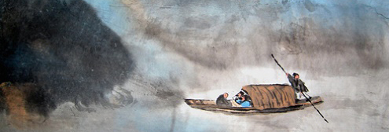

| 前赤壁赋(原文) |
壬(rén)戌 (xū)之秋，七月既望，苏子与客泛舟，游于赤壁之下。清风徐来，水波不兴。举酒属（zhǔ）客，诵明月之诗，歌窈窕之章。少(shǎo) 焉，月出于东山之上，徘徊于斗(dǒu )牛之间。白露横江，水光接天。纵一苇之所如，凌万顷之茫然。浩浩乎如冯(píng)虚御风，而不知其所止；飘飘乎如遗世独立，羽化而登仙。
于是饮酒乐甚，扣舷〔xián]而歌之。歌曰：“桂棹(zhào)兮兰桨，击空明兮溯流光。渺渺兮予怀，望美人兮天一方。”客有吹洞箫者，倚歌而和(hè)之。其声呜呜然，如怨如慕，如泣如诉，余音袅袅[niǎo]，不绝如缕。舞幽壑之潜蛟，泣孤舟之嫠(lí)妇。
苏子愀（qiǎo）然，正襟危坐，而问客曰：“何为其然也？”客曰：“‘月明星稀，乌鹊南飞’,此非曹孟德之诗乎？西望夏口，东望武昌。山川相缪(liáo)，郁乎苍苍，此非孟德之困于周郎者乎？方其破荆州，下江陵，顺流而东也，舳(zhú)舻(lú)千里，旌(jīng)旗蔽空，酾(shi)酒临江，横槊(shuò)赋诗，固一世之雄也，而今安在哉?况吾与子渔樵(qiáo)于江渚(zhǔ)之上，侣鱼虾而友麋(mí)鹿,驾一叶之扁舟，举匏（páo）樽以相属（zhǔ）。寄蜉(fú)蝣(yóu)于天地，渺沧海之一粟(sù)。哀吾生之须臾(yú)，羡长江之无穷。挟（xié）飞仙以遨游，抱明月而长终。知不可乎骤得，托遗响于悲风。”
苏子曰：“客亦知夫水与月乎？逝者如斯，而未尝往也;盈虚者如彼，而卒莫消长(zhǎng)也。盖将自其变者而观之，则天地曾不能以一瞬；自其不变者而观之，则物与我皆无尽也，而又何羡乎？且夫天地之间，物各有主，苟非吾之所有，虽一毫而莫取。惟江上之清风，与山间之明月, 耳得之而为声，目遇之而成色, 取之无禁，用之不竭，是造物者之无尽藏(zàng)也，而吾与子之所共适。”
客喜而笑，洗盏(zhǎn)更（gēng)酌 (zhuó)。肴(yáo)核既尽，杯盘狼藉(jí)。相与枕藉(jiè)乎舟中，不知东方之既白。
注释
[1]选自《经进东坡文集事略》卷一，这篇散文是宋神宗元丰二年（1079）苏轼贬谪黄州（今湖北黄冈）时所作。因后来还写过一篇同题的赋，故称此篇为《前赤壁赋》，十月十五日写的那篇为《后赤壁赋》。赤壁：实为黄州赤鼻矶，并不是三国时期赤壁之战的旧址，当地人因音近亦称之为赤壁，苏轼知道这一点，将错就错，借景以抒发自己的怀抱。
[2]壬戌：宋神宗元丰五年，岁在壬戌。
[3]既望：既，过了；望，农历小月十五日，大月十六日。
[4]徐：舒缓地。
[5]兴：起，作。
[6]属：通“嘱（zhǔ ），劝酒。
[7]明月之诗：《诗经·陈风·月出》有“舒窈纠兮”之句，故称“明月之诗”、“窈窕之章 ”，与下注释相同。
[8]窈窕之章：《月出》诗首章为："月出皎兮，佼人僚兮，舒窈纠兮，劳心悄兮。""窈纠"同"窈窕"。
[9]少焉：不一会儿。
[10]斗牛：斗、牛，星宿名，即斗宿（南斗）、牛宿。
[11]白露横江：白茫茫的水气。横江：笼罩江面。
[12]纵一苇之所如，凌万顷之茫然：任凭小船在宽广的江面上飘荡。纵：任凭。一苇：像一片苇叶那么小的船，比喻极小的船。《诗经·卫风·河广》："谁谓河广，一苇杭（航）之。"如：往，去。凌：越过。万顷：形容江面极为宽阔。茫然，旷远的样子。
[13]冯虚御风：（像长出羽翼一样）驾风凌空飞行。冯：通"凭"，乘。虚：太空。御：驾御。
[14]遗世独立：超越尘世,独自存在。
[15]羽化而登仙：道教把成仙叫作"羽化"，想长了翅膀一样，认为成仙后能够飞升。登仙：登上仙境。
[16]扣舷：敲打着船边，指打节拍，舷，船的两边。
[17]桂棹（zhào）兮兰桨：用桂树木做的棹、用木兰做的船桨，棹，一种划船工具，形似桨。
译文 壬戌年秋天，七月十六日，我同客人乘船游于赤壁之下。清风缓缓吹来，江面水波平静。于是举杯邀客人同饮，吟咏《诗经·陈风·月出》一诗的“窈窕”一章。一会儿，月亮从东山上升起，在斗宿和牛宿之间徘徊。白茫茫的雾气笼罩着江面，波光与星空连成一片。我们听任苇叶般的小船在茫茫万顷的江面上自由飘动。多么辽阔呀，像是凌空乘风飞去，不知将停留在何处；多么飘逸呀，好像变成了神仙，飞离尘世，登上仙境。
于是，喝着酒，快乐极了，敲着船舷唱起来。歌词说：“桂木的棹啊，兰木的桨，拍打着清澈的江水啊，船儿迎来流动的波光。多么深沉啊，我的情怀，仰望着我思慕的人儿啊，她在那遥远的地方。”客人中有吹洞箫的，按着歌声吹箫应和。箫声呜呜呜，像是怨恨，又像是思慕，像是哭泣，又像是倾诉，余音悠扬，像一根轻柔的细丝线延绵不断。能使潜藏在深渊中的蛟龙起舞，孤舟上的寡妇啜泣。
我不禁感伤起来，整理了衣裳，端正地坐着，问客人说：“为什么会这样？”客人说：“‘月明星稀，乌鹊南飞’，这不是曹孟德的诗吗？向西望是夏口，向东望是武昌，山川缭绕，郁郁苍苍，这不是曹孟德被周瑜围困的地方吗？当他夺取荆州，攻下江陵，顺着长江东下的时候，战船连接千里，旌旗遮蔽天空，在江面上洒酒祭奠，横端着长矛朗诵诗篇，本来是一代的英雄啊，可如今又在哪里呢？何况我同你在江中和沙洲上捕鱼打柴，以渔虾为伴，与麋鹿为友，驾着一叶孤舟，在这里举杯互相劝酒。只是像蜉蝣一样寄生在天地之间，渺小得像大海中的一颗谷粒。哀叹我生命的短暂，而羡慕长江的流水无穷无尽。希望同仙人一起遨游，与明月一起长存。我知道这是不可能经常得到的，因而只能把箫声的余音寄托给这悲凉的秋风。”
我说：“你们也知道那水和月亮吗？（江水）总是不停地流逝，但它们并没有流走；月亮总是那样有圆有缺，但它终究也没有增减。要是从它们变的一面来看，那么，天地间的一切事物，甚至不到一眨眼的工夫就发生了变化；要是从它们不变的一面来看，万物同我们一样都是永存的，又何必羡慕它们呢！再说，天地之间，万物各有主人，假如不是为我所有，即使是一丝一毫也不能得到。只有这江上的清风和山间的明月，耳朵听到了才成其为声音，眼睛看到了才成其为颜色，占有它们，无人禁止，使用它们，无穷无尽，这是大自然无穷无尽的宝藏，而我能够同你们共享。”
客人听了之后，高兴地笑了，洗净杯子，重新斟酒。菜肴果品已吃完了，杯盘杂乱地放着。大家互相枕着靠着睡在船中，不知不觉东方已经亮了。
鉴赏
第1段，写夜游赤壁的情景。作者“与客泛舟游于赤壁之下”，投入大自然怀抱之中，尽情领略其间的清风、白露、高山、流水、月色、天光之美。兴之所至，信口吟诵《诗经·月出》首章“月出皎兮，佼人僚兮。舒窈纠兮，劳心悄兮。”把明月比喻成体态娇好的美人，期盼着她的冉冉升起。与《月出》诗相回应，“少焉，月出于东山之上，徘徊于斗牛之间。”并引出下文作者所自作的歌云：“望美人兮天一方”，情感、文气一贯。“徘徊”二字，生动、形象地描绘出柔和的月光似对游人极为依恋和脉脉含情。在皎洁的月光照耀下白茫茫的雾气笼罩江面，天光、水色连成一片，正所谓“秋水共长天一色”（王勃《滕王阁序》）。游人这时心胸开阔，舒畅，无拘无束，因而“纵一苇之所如，凌万顷之茫然”，乘着一叶扁舟，在“水波不兴”浩瀚无涯的江面上，随波飘荡，就好像在太空中乘风飞行，悠悠忽忽地离开人世，超然独立；又像长了翅膀飞升入仙境一样。浩瀚的江水与洒脱的胸怀，在作者的笔下腾跃而出，泛舟而游之乐，溢于言表。这是本文正面描写“泛舟”游赏景物的一段，以景抒情，融情入景，情景俱佳。
第2段，写作者饮酒放歌的欢乐和客人悲凉的箫声。作者饮酒乐极，扣舷而歌，以抒发其思“美人”而不得见的怅惘、失意的胸怀。这里所说的“美人”实际上乃是作者的理想和一切美好事物的化身。歌曰：“桂棹兮兰桨，击空明兮溯流光。渺渺兮予怀，望美人兮天一方。”这段歌词全是化用《楚辞·少司命》：“望美人兮未来，临风恍兮浩歌”之意，并将上文“诵明月之诗，歌窈窕之章”的内容具体化了。由于想望美人而不得见，已流露了失意和哀伤情绪，加之客吹洞箫，依其歌而和之，箫的音调悲凉、幽怨，“如怨如慕，如泣如诉，余音袅袅，不绝如缕”，竟引得潜藏在沟壑里的蛟龙起舞，使独处在孤舟中的寡妇悲泣。一曲洞箫，凄切婉转，其悲咽低回的音调感人至深，致使作者的感情骤然变化，由欢乐转入悲凉，文章也因之波澜起伏，文气一振。
第3段，写客人对人生短促无常的感叹。此段由赋赤壁的自然景物，转而赋赤壁的历史古迹。主人以“何为其然也”设问，客人以赤壁的历史古迹作答，文理转折自然。但文章并不是直陈其事，而是连用了两个问句。首先以曹操的《短歌行》问道：“此非曹孟德之诗乎？”又以眼前的山川形胜问道：“此非孟德之困于周郎者乎？”两次发问使文章又泛起波澜。接着，追述了曹操破荆州、迫使刘琮投降的往事。当年，浩浩荡荡的曹军从江陵沿江而下，战船千里相连，战旗遮天蔽日。曹操志得意满，趾高气扬，在船头对江饮酒，横槊赋诗，可谓“一世之雄”！如今他在哪里呢？曹操这类英雄人物，也只是显赫一时，何况我辈！因而，如今只能感叹自己生命的短暂，羡慕江水的长流不息，希望与神仙相交，与明月同在。但那都是不切实际的幻想，所以才把悲伤愁苦“托遗响于悲风”，通过箫声传达出来。客的回答表现了一种虚无主义思想和消极的人生观，这是苏轼借客人之口流露出自己思想的一个方面。
第4段，是苏轼针对客之人生无常的感慨陈述自己的见解，以宽解对方。客曾“羡长江之无穷”，愿“抱明月而长终”。苏轼即以江水、明月为喻，提出“逝者如斯，而未尝往也；盈虚者如彼，而卒莫消长也”的认识。如果从事物变化的角度看，天地的存在不过是转瞬之间；如果从不变的角度看，则事物和人类都是无穷尽的，又何必羡慕江水、明月和天地呢！自然也就不必“哀吾生之须臾”了！这表现了苏轼豁达的宇宙观和人生观，他赞成从多角度看问题而不同意把问题绝对化，因此，他在身处逆境中也能保持豁达、超脱、乐观和随缘自适的精神状态，并能从人生无常的怅惘中解脱出来，理性地对待生活。而后，作者又从天地间万物各有其主、个人不能强求予以进一步的说明。那么什么为我们所有呢？江上的清风有声，山间的明月有色，江山无穷，风月长存，天地无私，声色娱人，我们恰恰可以徘徊其间而自得其乐。此情此景乃缘于李白的《襄阳歌》：“清风明月不用一钱买，玉山自倒非人推”，进而深化之。
第5段，写客听了作者的一番谈话后，转悲为喜，开怀畅饮，“相与枕藉乎舟中，不知东方之既白”。照应开头，极写游赏之乐，而至于忘怀得失、超然物外的境界。
清代古文家方苞评论这篇文章说：“所见无绝殊者，而文境邈不可攀，良由身闲地旷，胸无杂物，触处流露，斟酌饱满，不知其所以然而然。岂惟他人不能模仿，即使子瞻更为之，亦不能如此适调而畅遂也。”苏轼通过各种艺术手法表现自己坦荡的胸襟，他只有忘怀得失，胸襟坦荡，才能撰写出“文境邈不可攀”的《赤壁赋》来。